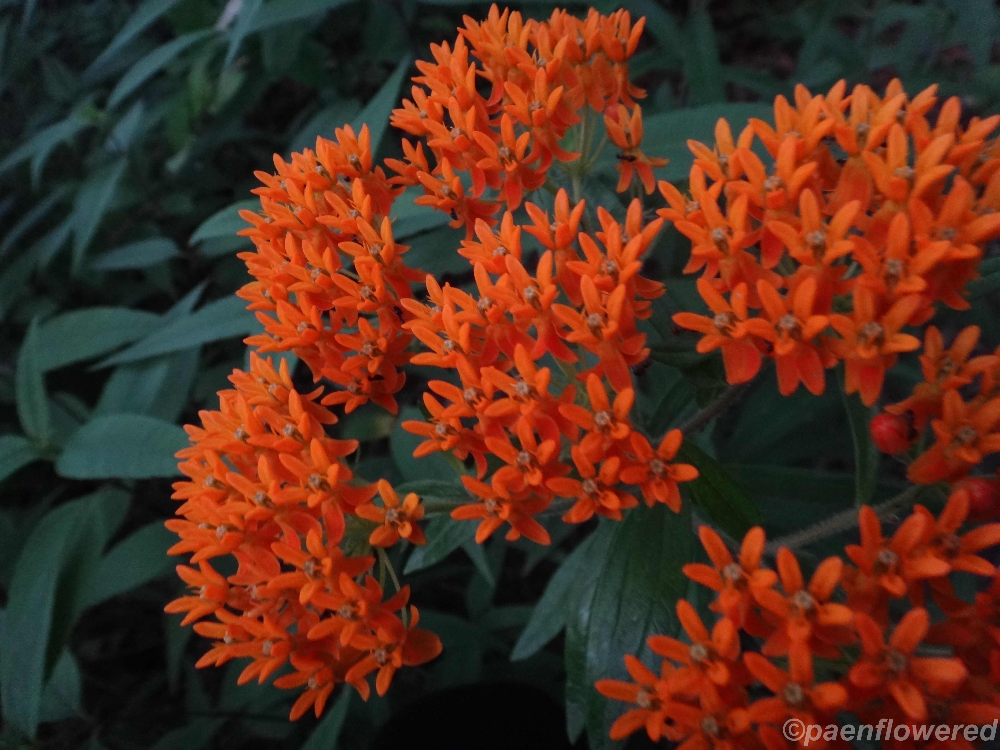
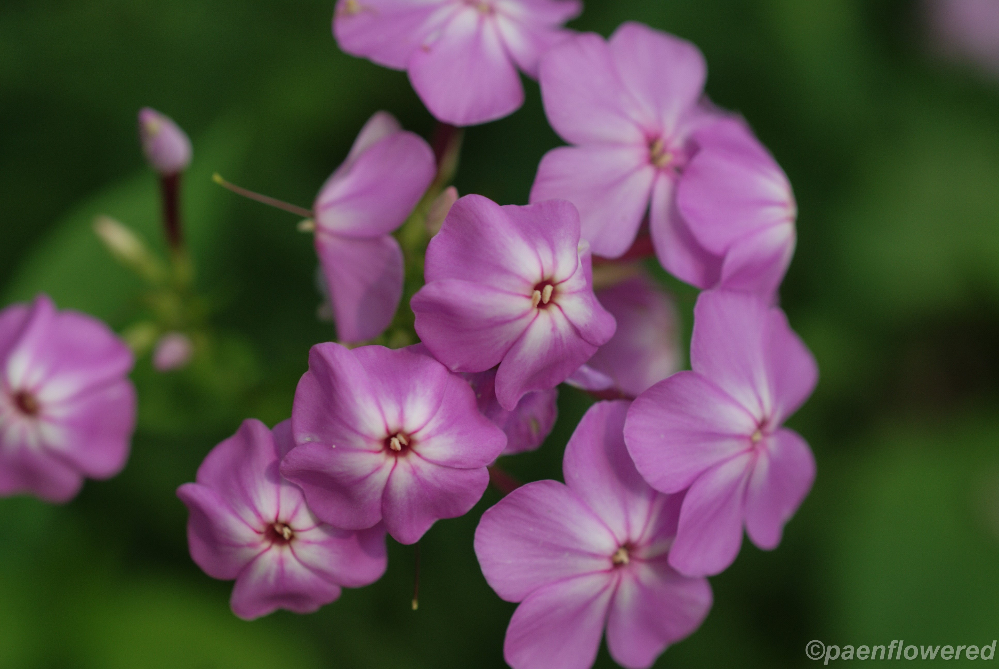

Butterfly Weed
A native summer flower that attracts butterflies and other pollinators with its bright orange blooms.

White Turtlehead
A native perennial wildflower with white, turtle-shaped flowers that bloom in late summer.

Tawny Cottonsedge
A wetland sedge with yellow-brown bristles that grows in bogs, swamps, and wet meadows.

Common Sneezeweed
A native perennial with yellow flowers that grows in wet meadows, swamps, and along streams.

Great Blue Lobelia
A striking late-summer wildflower with dense spikes of deep blue tubular flowers.

Fall Phlox
A tall native perennial with fragrant flower clusters that bloom from July through September.
